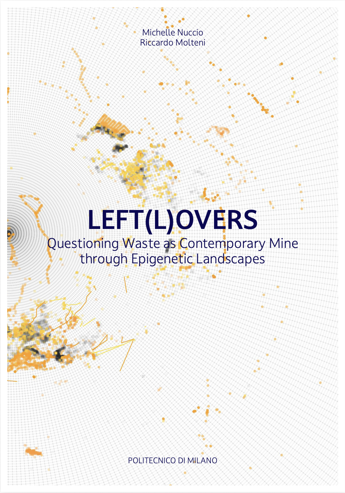
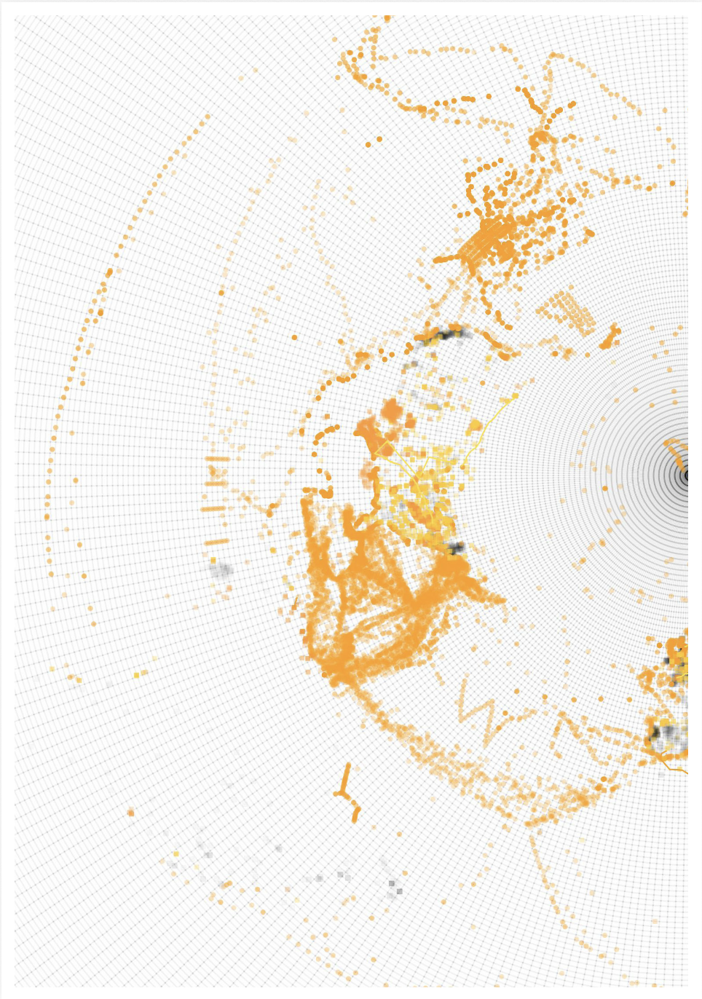

Welcome in my corner of the web :) Explore my coded CV, scroll through my projects, and feel free to leave a note in my guestbook!
Welcome in my corner of the web :) Explore my coded CV, scroll through my projects, and feel free to leave a note in my guestbook!
Welcome in my corner of the web :) Explore my coded CV, scroll through my projects, and feel free to leave a note in my guestbook!
Welcome in my corner of the web :) Explore my coded CV, scroll through my projects, and feel free to leave a note in my guestbook!
#
+
@
*
%
&
=
2027
2026
2025
@
=
2024
2023
2022
Loading project…
Loading project…
Loading project…


Loading project…
Guestbook
Older entries
×
Personal Projects · December 2024
Left(L)over.
Questioning Waste as Contemporary Mines through Epigenetic Landscapes
in collaboration with Riccardo Molteni
Publication. Forthcoming.
×
Personal Projects · July 2025
re-seeding.
Showing as an act of soil regeneration after bombing.
in collaboration with Madalena Adriano, Gaia Lucchina and Riccardo Molteni
×
Awards & Scholarships · March 2026
Ermenegildo Zegna Founder’s Scholarship
issued by Fondazione Zegna
×
Awards & Scholarships · January 2026
Dean's Scholarship
issued by Columbia University GSAPP
×
Awards & Scholarships · November 2025
Special Mention for Research - 2025 Graduate Award
issued by Fondazione OAMI
×
Exhibitions · May–November 2025
Maru. Mare Debole
at 19th edition of Venice Architecture Biennale [Intelligens. Natural. Artificial. Collective] Italian Pavilion
in collaboration with Maddalena Adriano, Gaia Lucchina and Riccardo Molteni
Place: Venezia, Italy
from May 2025 to Nov. 2025
×
Exhibitions · October 2025
Ec(h)o-es in the Rings
at Bolzano Art Week 2025
in collaboration with Riccardo Molteni
Place: Palais Campofranco, Bolzano, Italy
October 2025
×
Collaborations · July–December 2025
Agenda Urbana Brescia 2050
in collaboration with Elisa Cristiana Cattaneo
×
Collaborations · June 2025
Caslino d'Erba 2026
in collaboration with Chiara Toscani
×
Education · March 2022–December 2024
Master of Science in Architecture - Built Environment Interiors
Politecnico di Milano.
×
Education · May 2026–May 2027
Master of Science in Computational Design Practice
Columbia University. Graduate School of Architecture, Planning and Preservation.
×
Work Experience · June–July 2023
Worksphere Design Inern.
at IL PRISMA ARCHITETTURA S.R.L.
Milano, Italy
×
Work Experience · March–September 2024
ESG Research Intern
at IL PRISMA ARCHITETTURA S.R.L.
Milano, Italy
×
Work Experience · May 2025
Welcome & Vip Desk Assistant
at ALCOVA
Varedo, Italy
×
Work Experience · November 2025–May 2026
Architect
at VMR Archittura
Milano, Italy
×
Work Experience · September 2026–May 2027
Research Assistant
at Temple Hoyne Buell Center for the study of Architecture at Columbia University
New York City, New York
×
Teaching Experience · September 2024–February 2025
Theory in Contemporary Architectural Design.
(University Teaching Assistant)
Elisa Cristiana Cattaneo
at Politecnico di Milano
×
Teaching Experience · March 2025
Workshop Codify Ecology
(University Teaching Assistant)
Elisa Cristiana Cattaneo
at Domus Academy, Milano
×
Teaching Experience · September 2025
Workshop Urban Narratives
(University Teaching Assistant)
Elisa Cristiana Cattaneo
at Domus Academy, Milano
×
Teaching Experience · September 2025–January 2026
Theory in Contemporary Architectural Design.
(University Teaching Assistant)
Elisa Cristiana Cattaneo
at Politecnico di Milano